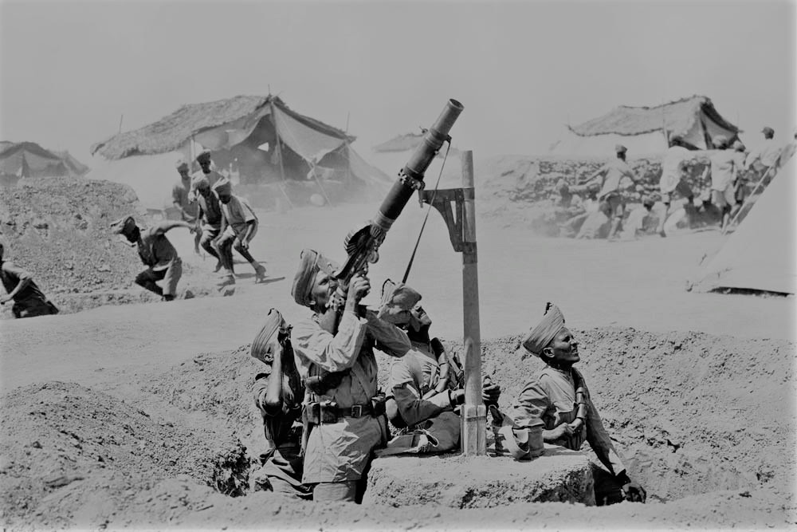
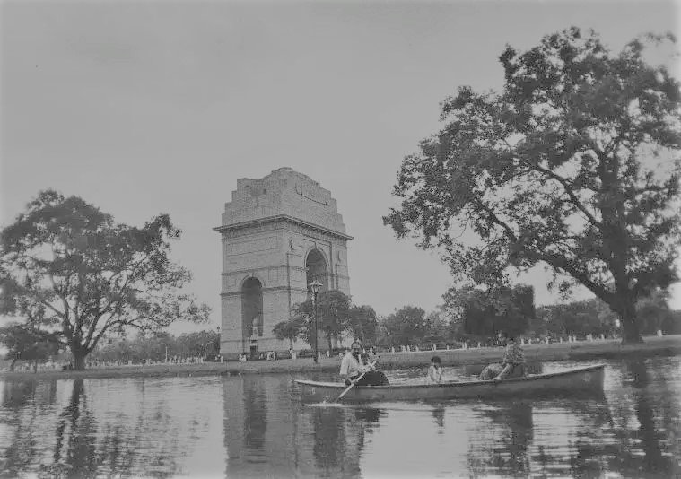
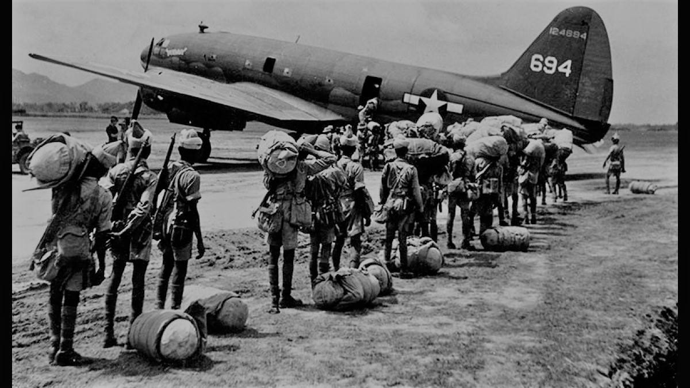
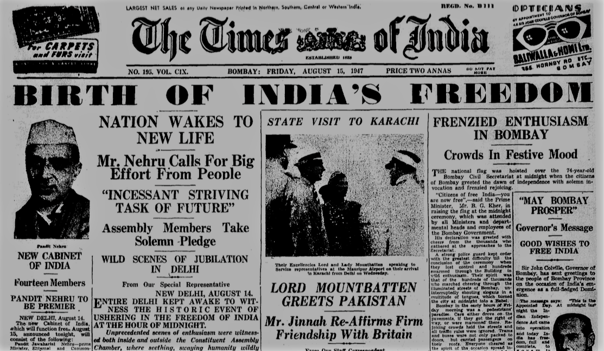
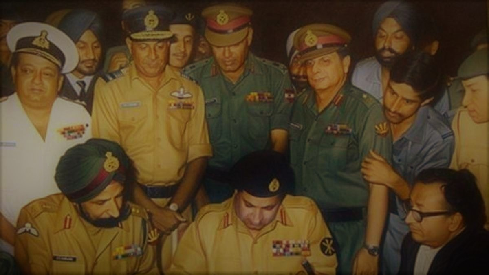

The British Indian Army was established in the 18th century by the East India Company to protect their trading interests in India. Over time, it grew into a significant military force under the British Crown.

WW1
The British Indian Army played a crucial role in World War I, deploying troops to various theaters of war, including the Western Front, Mesopotamia, and East Africa. Indian soldiers made significant sacrifices and contributions during this conflict.

INTERBELLUM
During the interwar years, the Indian Army underwent modernization and restructuring. It continued to serve the British Empire's interests, including in conflicts such as the Third Anglo-Afghan War (1919) and the Waziristan Campaigns.

WW2
Once again, the Indian Army played a vital role in World War II, deploying millions of troops across different fronts, including North Africa, the Middle East, Southeast Asia, and Burma. The Indian National Army (INA), led by Subhas Chandra Bose, also fought alongside the Axis powers against British rule.

INDEPENDENCE
With India's independence in 1947 and the subsequent partition into India and Pakistan, the British Indian Army was divided between the two newly formed nations. This division was accompanied by communal violence and mass migrations, resulting in significant upheaval.

CONFLICTS
Following independence, the Indian Army has been involved in several conflicts, including the Indo-Pakistani Wars of 1947, 1965, and 1971, as well as the Kargil War in 1999. Additionally, it has undertaken numerous peacekeeping missions under the auspices of the United Nations.
PRESENT
In recent decades, the Indian Army has focused on modernization and enhancing its capabilities to meet contemporary security challenges, including insurgency, terrorism, and border disputes.